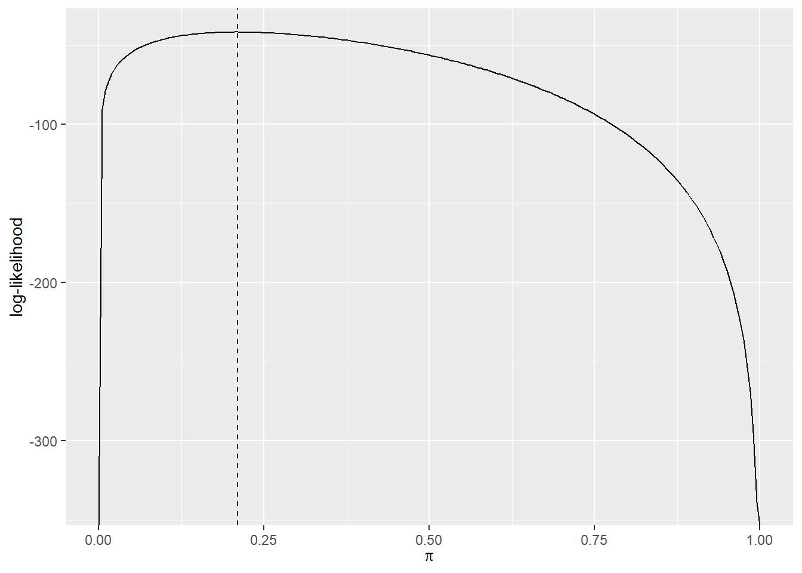
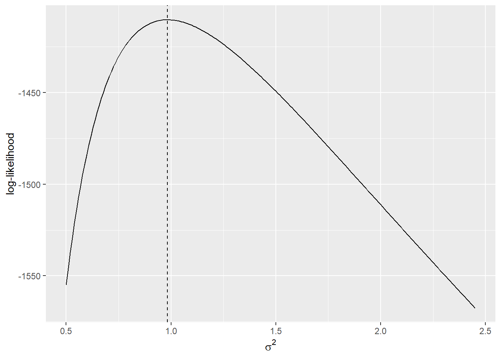

2 Maximum Likelihood Estimation
2.1 Bernoulli Distribution (Example 7.18)
A laboratory is interested in testing a new child-friendly pesticide on Blatta orientalis (oriental cockroaches). The scientists from the lab apply the new pesticide to 81 randomly selected Blatta orientalis oothecae (eggs).
The results from the experiment are stored in the data frame ROACHEGGS, from the PASWR2 package, in the variable eggs. A 0 indicates that nothing hatched from the egg, while a 1 indicates the birth of a cockroach.
Assuming the selected eggs are representative of the population of Blatta orientalis eggs, estimate the proportion of Blatta orientalis eggs that result in a birth, after being sprayed with the child-friendly pesticide.
Solution
We can start by reading in the data and saving it as an object called eggs.
Whether or not a Blatta orientalis egg hatches is a Bernoulli trial with unknown parameter \(\pi\). That is, \(X\sim\mbox{Bernoulli}(\pi)\), where \(X\) is the value 0, indicating that nothing hatched from the egg, or 1, indicating the birth of a cockroach.
We want to use the data from ROACHEGGS, as well as this Bernoulli distribution to find a maximum likelihood estimate for \(\pi\), the probability that an egg hatches after being sprayed with the pesticide.
From the Probability Formula Sheet we see that the Bernoulli distribution has a probability distribution function (pdf) given by,
\[ P(X=x)=\pi^x(1-\pi)^{(1-x)} \]
When \(n\) samples are taken and the values \(x_1, x_2, \ldots, x_n\) are observed (with each being either zero or one) we can write the likelihood function as,
\[\begin{equation} L(\pi|\mathbb{x})=\prod_{i=1}^n\pi^{x_i}(1-\pi)^{1-x_i} \tag{2.1} \end{equation}\]
It will be easier to maximise the natural logarithm of the likelihood. Taking the natural logarithm of the likelihood function gives the log-likelihood function,
\[\begin{align} \ln L(\pi|\mathbb{x})&=\ln\left[\prod_{i=1}^n\pi^{x_i}(1-\pi)^{1-x_i}\right]\\ &=\sum_{i=1}^n\ln\left[\pi^x_i(1-\pi)^{1-x_i}\right]\\ &=\sum_{i=1}^n\left[x_i\ln\pi+(1-x_i)\ln(1-\pi)\right]\\ &=\ln\pi\sum_{i=1}^nx_i+\ln(1-\pi)\sum_{i=1}^n(1-x_i) \tag{2.2} \end{align}\]
The value that maximizes of this function will be our maximum likelihood estimate.
Using the following code and the data stored within the variable eggs as the various \(x_i\) values, create a function in R called loglike to calculate the value of the above log-likelihood (2.2), for a given value of \(\pi\). .
Using this new R function loglike, plot the log-likelihood (2.2), to see where the maximum value roughly lies using ggplot2 as follows:
library(ggplot2)
ggplot(data.frame(x = c(0, 1)), aes(x = x)) +
stat_function(fun = loglike, n = 200) +
labs(x = expression(pi),
y = "log-likelihood")The code first creates a data frame which contains the range of values for \(\pi\), \(\left[0, 1\right]\), that we want to plot over. It then uses the layer stat_function() to calculate the value of the log-likelihood function (2.2) at 200 different points between 0 and 1. These values are automatically displayed as a line by stat_function().
We can see from the above plot, that the maximum value of the log-likelihood function lies somewhere between 0.10 and 0.25. We can be more accurate than this however, and continue with the maximisation problem to find the exact value at which the log-likelihood function is maximised.
To find the value that maximizes this log-likelihood function, we need to take the first order derivative of \(\ln L(\pi|\mathbb{x})\) with respect to \(\pi\) and set the answer equal to 0. This then gives the equation,
\[ \begin{aligned} \frac{\partial\ln L(\pi|\mathbb{x})}{\partial\pi}&=\frac{\sum_{i=1}^nx_i}{\pi}-\frac{\sum_{i=1}^n(1-x_i)}{(1-\pi)}=0 \end{aligned} \] that needs to be solved. The solution to this is given by \(\pi=\frac{\sum_{i=1}^n}{n}=\bar x\) (try and show this yourself).
Our final step is to check that \(\pi=\bar x\) indeed corresponds to a maximum. We can do this by checking that the second order derivative of the log-likelihood, with respect to \(\pi\), is negative at \(\pi=\bar x\). That is, \(\frac{\partial^2\ln L(\pi|\mathbb{x})}{\partial\pi^2}<0\) when \(\pi=\bar x\).
The second order derivative of the log-likelihood function is,
\[ \begin{aligned} \frac{\partial^2\ln L(\pi|\mathbb{x})}{\partial\pi^2}&=\frac{-\sum_{i=1}^nx_i}{\pi^2}-\frac{n-\sum_{i=1}^nx_i}{(1-\pi)^2} \end{aligned} \] The value of the second order derivative at \(\pi=\bar x\) is then,
\[ \begin{aligned} \frac{\partial^2\ln L(\pi|\mathbb{x})}{\partial\pi^2}&=\frac{-\sum_{i=1}^nx_i}{\bar x^2}-\frac{n-\sum_{i=1}^nx_i}{(1-\bar x)^2}\\ &=\frac{-n\bar x}{\bar x^2}-\frac{n-n\bar x}{(1-\bar x)^2}\\ &=\frac{-n}{\bar x}-\frac{n(1-\bar x)}{(1-\bar x)^2}\\ &=\frac{-n}{\bar x}-\frac{n}{(1-\bar x)}\\ &=\frac{-n}{\bar x(1-\bar x)} \end{aligned} \] which is less than 0 since \(0\leq\bar x\leq1\) and \(n>0\). Since the values of the likelihood function (2.1) at the boundaries of the parameter space (i.e. when \(\pi=0\) and \(\pi=1\)) are both 0, that is \(L(\pi=0|\mathbb{x})=0\) and \(L(\pi=1|\mathbb{x})=0\), then we can say that \(\pi=\bar x\) is the value that maximizes the log-likelihood function (and hence, the value that maximizes the likelihood function).
We have now shown that the maximum likelihood estimate is \(\hat\pi(\mathbb{x})=\bar x\). We can find the mean value from eggs which will be our estimate for the population proportion of eggs that hatch after being sprayed with the pesticide. Calculate the mean of eggs using the code below and verify that it is 0.2099.
[1] 0.2098765Add this value to the plot we made above, to show visually that this is indeed the maximum value. To do this, the code for the plot is exactly the same as above, but now the layer geom_vline() has been used to add a "dashed" vertical line at 0.2099.
ggplot(data.frame(x = c(0, 1)), aes(x = x)) +
stat_function(fun = loglike, n = 200) +
labs(x = expression(pi),
y = "log-likelihood") +
geom_vline(xintercept = mean(eggs), lty = "dashed")
After having defined the function loglike, which calculates the value of the log-likelihood of a Bernoulli distribution at a given value of \(\pi\), we could use the R function optimize() to find the maximum of the function. The arguments that optimize() can take are,
f =: the function for which the maximum (or minimum) value should be found.interval =: the interval across which the maximum (or minimum) value should be found.maximum =: aTRUEorFALSEstatement indicating whether the maximum or minimum should be found. By default, the minimum value will be found.
Find the value of the maximum likelihood estimator for the proportion of cockroach eggs which hatch after being sprayed with the pesticide as follows:
$maximum
[1] 0.2098906
$objective
[1] -41.61724Here, we have set interval = to be the range \([0,1]\), because \(\pi\) is a probability so it has to lie in the range \([0,1]\). optimize() returns two values; maximum which is the value of \(\pi\) which maximises the log-likelihood function, and objective which is the value of the log-likelihood function at this value of \(\pi\).
Note that the value of maximum returned here, 0.2099, is in agreement with the maximum likelihood estimate we found above (\(\hat\pi(\mathbb{x})=\bar x=0.2099\)).
Another function we could have used to solve this problem is the nlm() function. This will only search for the minimum of a function (not a maximum), so in order to use it to find the maximum of the log-likelihood function, we should input the negative of the log-likelihood. We can create this in a new function called negloglike as follows. Note that this makes use of our predefined function, loglike.
Now we are ready to use the nlm() function. The arguments this can take are,
f =: this is the function for which the minimum value should be found.p =: this is the starting parameter value to use to find the minimum.nlm()will work iteratively to find the minimum of the function.
Find the minimum of negloglike as follows:
$minimum
[1] 41.61724
$estimate
[1] 0.209876
$gradient
[1] 2.131628e-08
$code
[1] 1
$iterations
[1] 4The value we are interested in here is estimate which we can extract.
[1] 0.209876Again, this value is in agreement with the \(\bar x=0.2099\) being the maximum likelihood estimate. Note that nlm() has identified 0.2099 as being the value of \(\pi\) which minimises the negative of the log-likelihood, but this is equivalent to it being the value which maximises the log-likelihood.
You can find more examples of finding maximum likelihood estimators, both 'by hand' and using R in Section 7.3.2 Likelihood and Maximum Likelihood Estimators of Probability and Statistics with R.
2.2 Normal Distribution (Examples 7.24 & 7.25)
Suppose \(\left\{X_1,X_2,\dots,X_n\right\}\) is a random sample from a \(N\left(\mu, \sigma\right)\) distribution, where \(\mu\) is known. Find the maximum likelihood estimator of \(\sigma^2\), by hand. The questions below should help you understand the steps required to find the MLE.
The pdf of a random variable \(X\sim{N}\left(\mu,\sigma\right)\) is given by,
\[ f(x)=\frac{1}{\sqrt{2\pi\sigma^2}}\exp\left(-\frac{(x-\mu)^2}{2\sigma^2}\right),\,\,\,\,\,\,\,\,\,\,\,-\infty<x<\infty. \] See the Probability Formula Sheet.
What is the likelihood function of a random sample of \(n\), normally distributed random variables with mean \(\mu\) and standard deviation \(\sigma\)?
The likelihood of \(n\) random variables is given by the product of the \(n\) probability density functions. In this case, the likelihood function of \(n\) normally distributed random variables is given by,
\[\begin{align} L(\sigma^2|\mathbb{x})&=\prod_{i=1}^nf(x_i)\\ &=\prod_{i=1}^n\frac{1}{\sqrt{2\pi\sigma^2}}\exp\left(-\frac{(x_i-\mu)^2}{2\sigma^2}\right) \tag{2.3} \end{align}\]
By taking the natural logarithm of the likelihood function, what is the log-likelihood function of \(n\), normally distributed random variables with mean \(\mu\) and standard deviation \(\sigma\)?
You will need to work this out by hand and simplify the logarithm of the likelihood function.The log-likelihood can be found as follows,
\[\begin{align} \ln L(\sigma^2|\mathbb{x})&=\ln\left[\prod_{i=1}^n\frac{1}{\sqrt{2\pi\sigma^2}}\exp\left(-\frac{(x_i-\mu)^2}{2\sigma^2}\right)\right]\\ &=\ln\left[\prod_{i=1}^n\frac{1}{\sqrt{2\pi\sigma^2}}\right]+\ln\left[\prod_{i=1}^n\exp\left(-\frac{(x_i-\mu)^2}{2\sigma^2}\right)\right]\\ &=\sum_{i=1}^n\ln\left[(2\pi\sigma^2)^{-\frac{1}{2}}\right]+\sum_{i=1}^n\left(-\frac{(x_i-\mu)^2}{2\sigma^2}\right)\\ &=-\frac{1}{2}\sum_{i=1}^n\ln[2\pi]-\frac{1}{2}\sum_{i=1}^n\ln[\sigma^2]-\frac{\sum_{i=1}^n(x_i-\mu)^2}{2\sigma^2}\\ &=-\frac{n}{2}\ln(2\pi)-\frac{n}{2}\ln(\sigma^2)-\frac{\sum_{i=1}^n(x_i-\mu)^2}{2\sigma^2} \tag{2.4} \end{align}\]
This is the function for which we want to find the value that maximizes it, as this will be the maximum likelihood estimator (MLE).
The first order derivative of the log-likelihood function (2.4) is given by,
\[ \begin{align} \frac{\partial\ln L(\sigma^2|\mathbb{x})}{\partial\sigma^2}&=-\frac{n}{2\sigma^2}+\frac{\sum_{i=1}^n(x_i-\mu)^2}{2(\sigma^2)^2}=0 \end{align} \]
The solution to this equation is given by \(\sigma^2=\frac{\sum_{i=1}^n(x_i-\mu)^2}{n}\) (try and show this yourself).
The second order derivative of the log-likelihood function is,
\[ \begin{align} \frac{\partial^2\ln L(\sigma^2|\mathbb{x})}{\partial(\sigma^2)^2}=\frac{n}{2(\sigma^2)^2}-\frac{\sum_{i=1}^n(x_i-\mu)^2}{(\sigma^2)^3} \end{align} \]
Then, to ensure that a maximum of the log-likelihood function has been found, we need to show that \(\frac{\partial^2\ln L(\sigma^2|\mathbb{x})}{\partial(\sigma^2)^2}<0\) when \(\sigma^2=\frac{\sum_{i=1}^n(x_i-\mu)^2}{n}\).
That is, we want to check that when we sub in \(\sigma^2=\frac{\sum_{i=1}^n(x_i-\mu)^2}{n}\),
\[ \begin{align} \frac{\partial^2\ln L(\sigma^2|\mathbb{x})}{\partial(\sigma^2)^2}=\frac{n}{2(\sigma^2)^2}-\frac{\sum_{i=1}^n(x_i-\mu)^2}{(\sigma^2)^3}&<0\\ \frac{n\sigma^2}{2}-\sum_{i=1}^n(x_i-\mu)^2&<0\\ \frac{n}{2}\frac{\sum_{i=1}^n(x_i-\mu)^2}{n}-\sum_{i=1}^n(x_i-\mu)^2&<0\\ -\frac{1}{2}\sum_{i=1}^n(x_i-\mu)^2&<0 \end{align} \]
which is true since \(\sum_{i=1}^n(x_i-\mu)^2>0\).
Therefore, the maximum likelihood estimate of \(\sigma^2\) is \(\widehat{\sigma^2}(\mathbb{x})=\frac{\sum_{i=1}^n(x_i-\mu)^2}{n}\).
Simulating a sample and it's corresponding MLE
We can draw 1000 random samples from a \(N(4, 1)\) distribution, to verify that our maximum likelihood estimator \(\widehat{\sigma^2}(\mathbb{x})=\frac{\sum_{i=1}^n(x_i-\mu)^2}{n}\) gives a reasonably close estimate to the true parameter \(\sigma^2=1\).
To start with, draw and save the samples in the vector x using the code below. Here, the function set.seed() has been used so that the random numbers selected when rnorm() is used are always the same, no matter how many times the code is run. It doesn't matter what value is used inside set.seed(), as long as it is always the same value each time the code is run, the random values will remain the same. If you use the value 123 as in this code, you will get the same results as shown below.
In the quiz questions above, we saw that the log-likelihood function is given by,
\[ \ln L(\sigma^2|\mathbb{x})=-\frac{n}{2}\ln(2\pi)-\frac{n}{2}\ln(\sigma^2)-\frac{\sum_{i=1}^n(x_i-\mu)^2}{2\sigma^2} \]
Write a function in R called loglike_sigma2 which will take the values in x and a given value for \(\sigma^2\), and return the value of \(\ln L(\sigma^2|\mathbb{x})\) using the code:
Calculate the value of the maximum likelihood estimator (MLE), \(\widehat{\sigma^2}=\frac{\sum_{i=1}^n(x_i-\mu)^2}{n}\), based on the simulated data stored in x using:
This tells us that \(\widehat{\sigma^2}=0.983\), based on this observed sample.
Use ggplot2 to show a plot of the log-likelihood function (2.4) and add a vertical line at the maximum likelihood estimate \(\widehat{\sigma^2}=0.983\) using:
ggplot(data.frame(x = c(0.5, 2.45)), aes(x = x)) +
stat_function(fun = loglike_sigma2, n = 200) +
labs(x = expression(sigma^2),
y = "log-likelihood") +
geom_vline(xintercept = mle_sigma2, lty = "dashed")
The reason that this estimate is not exactly equal to \(\sigma^2=1\), which we used to draw the random sample, is because the maximum likelihood estimator is dependent on the sample observed. It gives us an estimate of the true population parameter, based on the sample. As we can see in the plot, this estimate is relatively close to the true population parameter \(\sigma^2=1\).
After having defined the function loglike_sigma2, we could use the function optimize() to find the maximum likelihood estimate. When the code below is run, we see again that the value that maximizes this function is \(\widehat{\sigma^2}=0.983\) which is in agreement with what we found 'by hand'.
$maximum
[1] 0.9827153
$objective
[1] -1410.231We could also use the nlm() function to find the value that maximizes the log-likelihood function, but remember this actually only finds minimum values of a given function, so we first have to define the negative of the log-likelihood function, negloglike_sigma2.
[1] 0.9827351This again shows us that the value that maximizes of the log-likelihood function (2.4) is \(\widehat{\sigma^2}=0.983\), based on our observed sample.
You can find more examples of finding maximum likelihood estimators, both 'by hand' and using R in Section 7.3.2 Likelihood and Maximum Likelihood Estimators of Probability and Statistics with R.